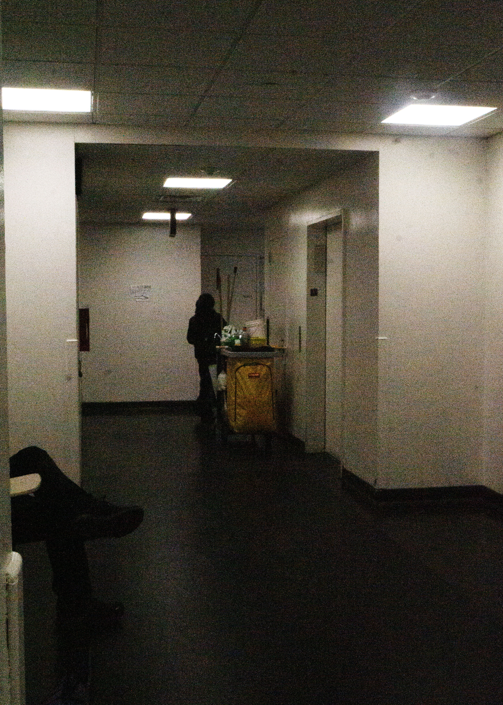

The reason for choosing a compositional idea like this to a convey a feeling of emptiness, with the dim light and the lack of light above and below, drawing the attention of the viewers towards the middle of the image. This allows the viewer to see the yellow cart almost immediately. Along with his the plain, yellowish walls create a sensation of being alone because it's so empty.